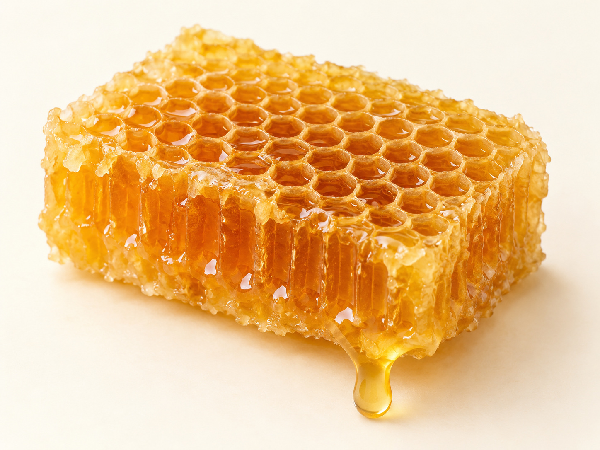
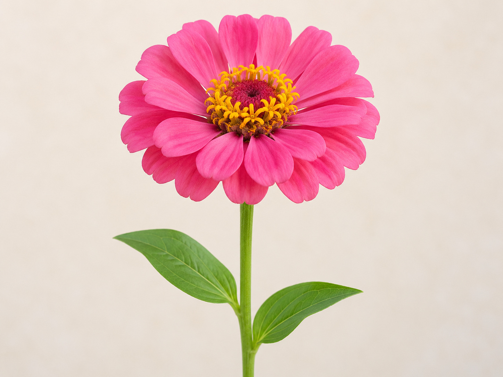

حزمةُ طباعةٍ واحدةٌ لليوم العاشر · ٤ أقسام (قسمٌ لكلِّ ركن). اضغطي Ctrl/⌘ + P ثم اختاري A4. تُقصّ البطاقاتُ وتُلوَّن الرسومُ الجاهزة. أعمار ٥–٦: بلا كتابةٍ ولا رسمٍ حرّ.
🧱 ساحة البناء
أبني خليّةَ النحل
وحدة أنا مخلوق · اليوم العاشر — بطاقاتٌ سداسية جاهزة تُوضع على البناء (لا تلوين)
طريقة العمل: يبني الطفل بالبلاطِ المغناطيسيّ السداسيّ خلايا متجاورة، ثم يضع البطاقةَ الجاهزة على بنائه؛ وتذكّره المعلمةُ أنّ اللهَ هدى النحلةَ لهذا البناء الدقيق. (لا تلوين هنا — التلوينُ في ركن فنوني.)
بطاقاتٌ سداسية تُوضع على البناء
عينٌ سداسية
صورة: خليّة
خليّةٌ متجاورة

صورة: عسل
قرصُ العسل
دليل معلمة غرس القيم · اليوم العاشر — ساحة البناء
🔎 ركن أكتشف ما حولي
سبحان مَن هداها
وحدة أنا مخلوق · اليوم العاشر — بطاقاتُ ملاحظةٍ بالمكبّر لنظام الخليّة
طريقة العمل: يلاحظ الطفل قطعةَ شمعِ العسل وصورَ الخليّة بالمكبّر، ويتفكّر في نظامِ العيونِ السداسية المتكرّر، ويردّد عند العجب: «سبحان مَن هداها».
بطاقاتُ الملاحظة — تُقصّ وتُطابَق بالعيّنة
شكلٌ سداسيّ
سبحان مَن هداها
صورة: عسل
قرصُ عسل
سبحان مَن هداها
صورة: مكبّر
مكبّري
أُلاحظُ وأتفكّر
دليل معلمة غرس القيم · اليوم العاشر — ركن أكتشف ما حولي
🧩 ركن أدرك وأستمتع
النحلةُ ومنافعها
وحدة أنا مخلوق · اليوم العاشر — بطاقاتُ تسلسلٍ ومطابقةٍ تُقصّ (بلا ملامح)
طريقة العمل: تُقصّ البطاقاتُ (بصورٍ رمزية بلا ملامح)، ويرتّب الطفل: زهرة ← نحلة ← عسل، ثم يطابقُ النحلةَ بمنتجها. حوارٌ بالصورة: «مَن جعل في العسل شفاءً؟».
رتّب: من الزهرة إلى العسل (١ ← ٣)

صورة: زهرة
زهرة
١
صورة: نحلة
نحلة
٢
صورة: عسل
عسل
٣
دليل معلمة غرس القيم · اليوم العاشر — ركن أدرك وأستمتع
🎨 ركن فنوني الجميلة
ألوّنُ الخليّةَ والزهرة
وحدة أنا مخلوق · اليوم العاشر — مشهدٌ جاهزٌ للتلوين + قرصُ عسلٍ يُقصّ ويُلصق
طريقة العمل: يلوّن الطفل مشهدَ الخليّة والزهور الجاهز (نحلةٌ رمزية بلا ملامح)، ثم يقصّ قرصَ العسل ويلصقه، ويردّد «جمالُ صنعِ الله في النحلة والزهرة».
١) مشهدُ الخليّة والزهور — ألوّنه
٢) قرصُ العسل — يُلوَّن ويُقصّ ويُلصق
صورة: عسل
قرصُ عسل
صورة: زهرة
زهرة
عينٌ سداسية
المعنى المركزي المتكامل لليوم العاشر: أوحى اللهُ للنحلة فبنت بيتها سداسيًّا وصنعت العسلَ شفاءً؛ فأتفكّرُ في هدايتها وأشكرُ خالقها وأحمده على نعمه.
دليل معلمة غرس القيم · اليوم العاشر — ركن فنوني الجميلة · نشاطٌ تكامليٌّ بروح اللعب لا الاختبار
 صورة: خليّة
صورة: خليّة